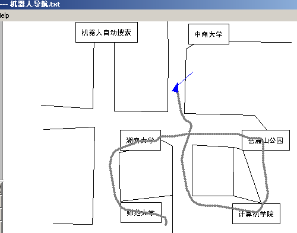

|
实验九 机器人路径规划实验群 一、实验目的： 熟悉和掌握机器人导航的信息处理流程，了解、比较基于行为主义和符 号主义的人工智能方法在机器人中的应用特点和效果，以及结合两者的 规划与决策方式。 二、实验原理: 模式识别(障碍\目标识别)和自动控制原理. 三、实验条件： 1 . 机器人导航可视化实验环境:下图是该环境运行中的一个画面.图中兰色箭头代表一个 运动机器人. 
四、实验内容： 1. 简单地形导航; 2.复杂地形导航; 3.机器人陷阱; 4 .复杂陷阱 等. 五、实验步骤： 验证性实验: 1 进入实验环境，装载相关实验模块。 2 选择不同的运行方式，观察运行过程。 3 设置不同属性或参数，观察过程的变化。 4 作好实验记录,并作出相关分析。 设计性实验: 1 进入创建新图工作窗,创建标志物对象,并创建障碍物. 2 进入编辑窗,分别编辑环境描述代码、高层控制器、中层控制器代码和内建函数。 3 进入选项窗，编辑机器人属性和行进导航规划。 6 选择相应地运行方式，运行并调试，观察导航情况。 7、 作好实验记录，分析、修改、并得出结论。
六、实验结论：包括做实验的目的、方法、过程等，具体要写成实验报告，如下图所示（见下页）。 附：导航实验报告表:
|
|||||||||||||||||||||||||||||||||||||||||||||||||
| [导航栏特性在此站点中不可用] | |||||||||||||||||||||||||||||||||||||||||||||||||